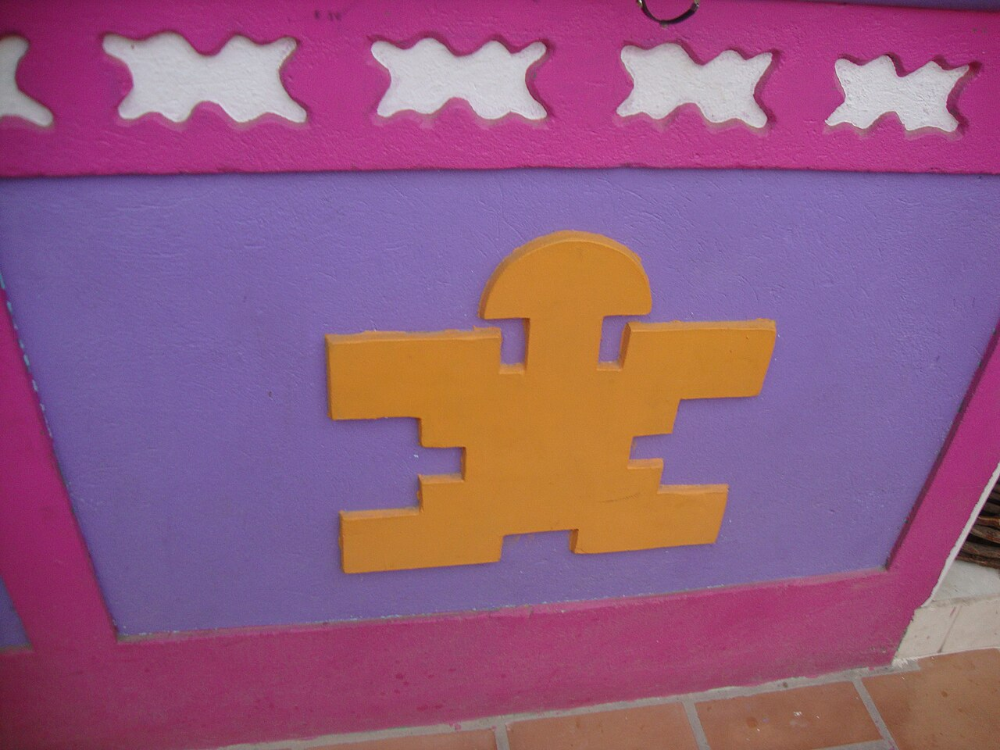
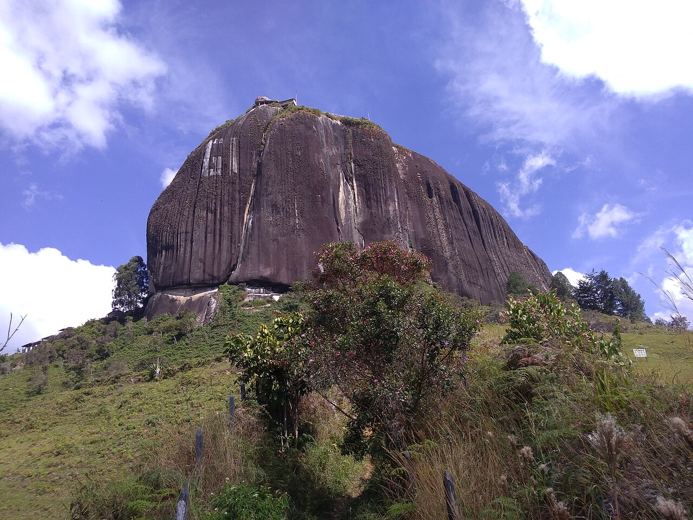
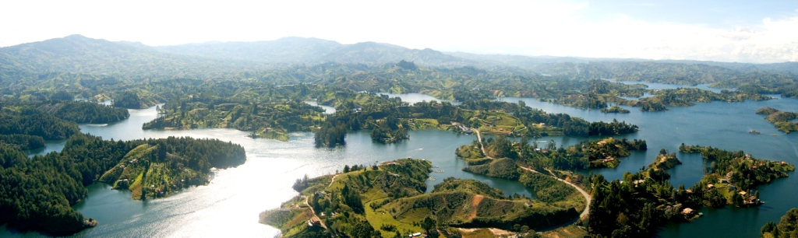

Streets and decorative panels
Discover reliefs that tell the town’s stories.
Find on the map ↗East · Antioquia, Colombia
Decorative wall panels, detailed streets and reservoir landscapes.
What to see ↗Discover its history ↓
Do you have a business in Guatapé? Leave your details to take part ↗
Discover the destination
Decorative wall panels tell stories of local trades and daily life. The reservoir transformed the area during the twentieth century, adding a waterscape to Guatapé’s identity.

Ideas for your visit
Choose the places that spark your curiosity and plan your route at your own pace.
Discover reliefs that tell the town’s stories.
Find on the map ↗
02A landscape landmark overlooking the reservoir.
Find on the map ↗
03Explore the landscape and ask local operators about available trips.
Find on the map ↗Images resized; framing may vary by screen. Photographs licensed under CC BY-SA retain that license.
Connect the parts of your trip
Find how to get around, where to stay and eat, things to do and the services you need. Explore at your own pace.
There are no places published in this directory yet.
Locate the places you want to visit and check their opening hours, entry conditions and accessibility before planning your route.
Find Guatapé on the map ↗There are no upcoming events published.
Organising an event? Let’s talk ↗Join Explorando Lugares
Be part of it.
Whether you run a hotel, restaurant, bar or shop, provide transport or organise tours and activities, we would like to hear about your business.
Leave your contact details. We will get in touch to discuss featuring your business on the portal.
I want to take part ↗